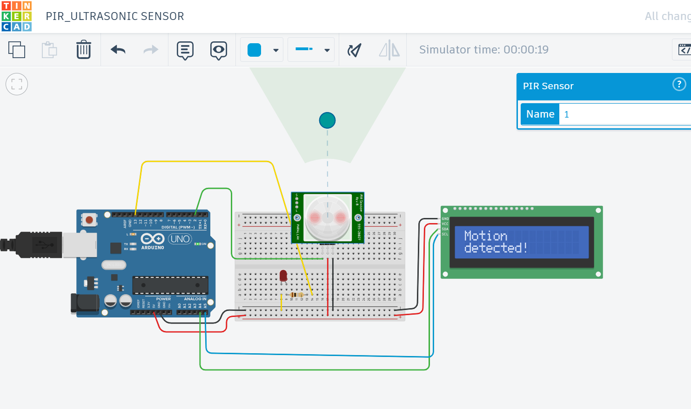

Introduction to Wired Communication Protocols
PIR Sensor with Arduino
What is a PIR Sensor?
A PIR sensor (Passive Infrared Sensor) detects motion by measuring infrared (IR) light radiating from objects in its field of view. It’s often used in motion-activated systems like security alarms and lighting.
How It Works
- All objects emit infrared radiation.
- The PIR sensor detects changes in IR levels—like when a person walks by.
- It uses two IR sensors; motion is detected when there's a difference in IR between them.
Required Components
- Arduino Uno
- PIR Sensor (e.g., HC-SR501)
- LED
- 220Ω resistor
- Breadboard and jumper wires
Wiring
- PIR VCC → Arduino 5V
- PIR GND → Arduino GND
- PIR OUT → Arduino Digital Pin 2
- LED Anode (+) → Pin 13 through a 220Ω resistor
- LED Cathode (-) → GND
Sample Arduino Project
Project code
#include <Wire.h>
#include <LiquidCrystal_I2C.h>
LiquidCrystal_I2C lcd(0x27, 16, 2);
int pirPin = 2; // PIR sensor output pin
int ledPin = 13; // Onboard LED pin
void setup() {
lcd.init();
lcd.backlight();
pinMode(pirPin, INPUT);
pinMode(ledPin, OUTPUT);
Serial.begin(9600);
lcd.setCursor(0,0);
lcd.print("PIR LCD");
lcd.setCursor(0,1);
lcd.print("SENSOR");
}
void loop() {
int motionDetected = digitalRead(pirPin);
if (motionDetected == HIGH) {
digitalWrite(ledPin, HIGH); // Turn on LED
lcd.setCursor(0,0);
lcd.print("Motion");
lcd.setCursor(0,1);
lcd.print("detected!");
delay(500);
lcd.clear();
Serial.println("Motion detected!");
} else {
digitalWrite(ledPin, LOW); // Turn off LED
lcd.setCursor(0,0);
lcd.print("No");
lcd.setCursor(0,1);
lcd.print("motion!");
delay(500);
lcd.clear();
Serial.println("No motion.");
}
delay(500);
}